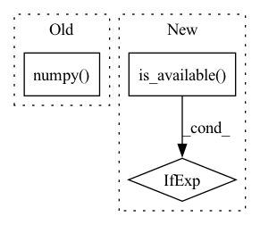

Pattern ID :24773
Before Change
// setattr(nconstr_ci,constr_i,torch.numel(constrMatrix))
nconstr_ci_total += torch.numel(constrMatrix)
ci_vec = ci_vec_torch.detach().numpy() // detach from current computational graph
return [ci_vec,ci_vec_torch,nconstr_ci_total]After Change
// inquality constraints
device = torch.device("cuda" if torch.cuda.is_available() else "cpu")
ci_vec_torch = torch.zeros(nconstr,1).to(device=device, dtype=torch.double)
curIdx = 0
// nconstr_ci = genral_struct()In pattern: SUPERPATTERN
Frequency: 5
Non-data size: 3
Instances Fragment ID: 76626633
Project Name: sun-umn/pygranso
Commit Name: 24295bb6c5576938b870e69d8e83a6077cbeb199
Time: 2021-09-08
Author: 52502144+Buyun-Liang@users.noreply.github.com
File Name: private/getCiVec.py
M Class Name: AnonimousClass
N Class Name: AnonimousClass
M Method Name: getCiVec(1)
N Method Name: getCiVec(1)
M Parent Class:
N Parent Class:
M File Name: private/getCiVec.py
N File Name: private/getCiVec.py
M Start Line: 11
M End Line: 27
N Start Line: 11
N End Line: 28
Before Change
// corresponding dimension of the variable, e.g, 3 by 2
tmpDim1 = var_dim_map.get(var)[0]
tmpDim2 = var_dim_map.get(var)[1]
grad_tmp = getattr(X,var).grad.numpy()
f_grad_reshape = np.reshape(grad_tmp,(tmpDim1*tmpDim2,1))
f_grad_vec[curIdx:curIdx+tmpDim1*tmpDim2] = f_grad_reshape
curIdx += tmpDim1 * tmpDim2
After Change
// transform f_grad form matrix form to vector form
// f_grad_vec = np.zeros((nvar,1))
device = torch.device("cuda" if torch.cuda.is_available() else "cpu")
dbg_print_1("Using device in getObjGrad")
f_grad_vec = torch.zeros(nvar,1).to(device=device, dtype=torch.double)
Fragment ID: 76626635
Project Name: sun-umn/pygranso
Commit Name: 24295bb6c5576938b870e69d8e83a6077cbeb199
Time: 2021-09-08
Author: 52502144+Buyun-Liang@users.noreply.github.com
File Name: private/getObjGrad.py
M Class Name: AnonimousClass
N Class Name: AnonimousClass
M Method Name: getObjGrad(4)
N Method Name: getObjGrad(4)
M Parent Class:
N Parent Class:
M File Name: private/getObjGrad.py
N File Name: private/getObjGrad.py
M Start Line: 9
M End Line: 17
N Start Line: 12
N End Line: 22
Before Change
//save parameters
params = model.state_dict()
for key, val in params.items():
params[key] = val.cpu().numpy()
torch.save(params, "pytorch_params_glue.file")
start_model = "random"
After Change
def finetune(args):
cuda_condition = torch.cuda.is_available()
device = torch.device("cuda:%d"%args.gpu_id if cuda_condition else "cpu")
task_name = args.task_name
if task_name in ["sst-2","cola", "mrpc"]:
num_labels = 2 Fragment ID: 76626634
Project Name: hsword/hetu
Commit Name: 127e9970d0ad0364767dd1b1946980f58f7b7376
Time: 2022-01-18
Author: 49988457+AFDWang@users.noreply.github.com
File Name: examples/nlp/bert/test_glue_pytorch_bert.py
M Class Name: AnonimousClass
N Class Name: AnonimousClass
M Method Name: finetune(1)
N Method Name: finetune(0)
M Parent Class:
N Parent Class:
M File Name: examples/nlp/bert/test_glue_pytorch_bert.py
N File Name: examples/nlp/bert/test_glue_pytorch_bert.py
M Start Line: 72
M End Line: 130
N Start Line: 60
N End Line: 81
Before Change
loss = self.net_with_loss(data, label)
grads = self.optimizer.gradient(loss, self.train_weights)
self.optimizer.apply_gradients(zip(grads, self.train_weights))
return loss.detach().numpy()
class TrainOneStepWithGradientClippingTF(object):
def __init__(self, net_with_loss, optimizer, train_weights, gradient_clipping):
self.net_with_loss = net_with_lossAfter Change
self.train_weights = train_weights
def __call__(self, data, label):
device = torch.device("cuda:0" if torch.cuda.is_available() else "cpu")
data = data.to(device)
label = label.to(device)
self.net_with_loss.to(device) Fragment ID: 76626637
Project Name: tensorlayer/tensorlayerx
Commit Name: 0356728c86777c237d692d3723a6d04fbe5649d4
Time: 2022-04-11
Author: jiaronghan@outlook.com
File Name: tensorlayerx/model/utils.py
M Class Name: TrainOneStepWithTH
N Class Name: TrainOneStepWithTH
M Method Name: __call__(3)
N Method Name: __call__(3)
M Parent Class: object
N Parent Class: object
M File Name: tensorlayerx/model/utils.py
N File Name: tensorlayerx/model/utils.py
M Start Line: 185
M End Line: 188
N Start Line: 185
N End Line: 192
Before Change
// corresponding dimension of the variable, e.g, 3 by 2
tmpDim1 = var_dim_map.get(var)[0]
tmpDim2 = var_dim_map.get(var)[1]
ci_grad_tmp = getattr(X,var).grad.numpy()
ci_grad_reshape = np.reshape(ci_grad_tmp,(tmpDim1*tmpDim2,1))[:,0]
ci_grad_vec[curIdx:curIdx+tmpDim1*tmpDim2,i] = ci_grad_reshape
curIdx += tmpDim1 * tmpDim2
getattr(X,var).grad.zero_()After Change
def getCiGradVec(nvar,nconstr_ci_total,var_dim_map,X,ci_vec_torch):
device = torch.device("cuda" if torch.cuda.is_available() else "cpu")
dbg_print_1("Using device in getObjGrad")
// gradient of inquality constraints
ci_grad_vec = torch.zeros(nvar,nconstr_ci_total).to(device=device, dtype=torch.double) Fragment ID: 76626636
Project Name: sun-umn/pygranso
Commit Name: 24295bb6c5576938b870e69d8e83a6077cbeb199
Time: 2021-09-08
Author: 52502144+Buyun-Liang@users.noreply.github.com
File Name: private/getCiGradVec.py
M Class Name: AnonimousClass
N Class Name: AnonimousClass
M Method Name: getCiGradVec(5)
N Method Name: getCiGradVec(5)
M Parent Class:
N Parent Class:
M File Name: private/getCiGradVec.py
N File Name: private/getCiGradVec.py
M Start Line: 5
M End Line: 15
N Start Line: 7
N End Line: 20